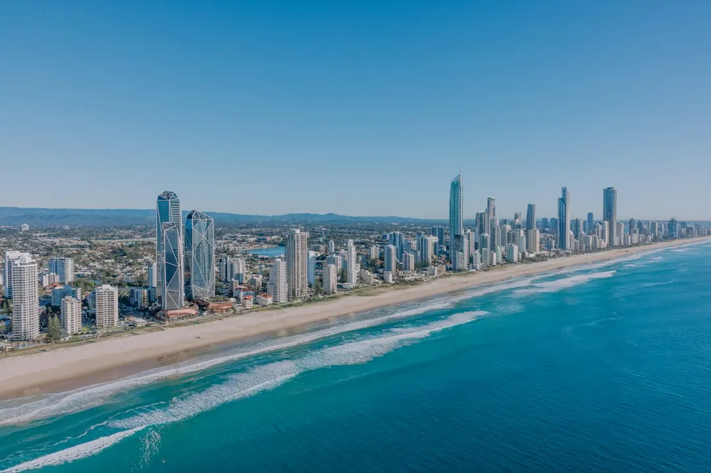

Concrete pool costs on the Gold Coast cannot be reduced to one reliable figure because excavation, access, slope, soil, size, interior finish and equipment change the scope. A compact pool on flat, accessible ground is a different project from a hillside pool requiring retaining and extra engineering. Before comparing quotes, confirm the design, excavation assumptions, approvals, barrier work, engineering, contract inclusions and Queensland Home Warranty Scheme cover. Pool work over $3,300 requires a QBCC licensed contractor, a written signed contract and cover.
For homeowners comparing concrete pool costs gold coast projects, the useful starting point is not a headline figure but a clear view of the block, access, design, approvals and inclusions that will shape each quote.
Concrete Pool Costs Gold Coast Explained
The published guidance from Concrete Pools Gold Coast identifies the site as the first major cost signal. Excavation, access, steel, the interior finish and equipment can each move the total, so a quote is more useful when it explains the assumptions behind every item.
Access affects how machinery reaches the dig area and how spoil leaves the property. Tight side access in older suburbs can slow excavation. A narrow side setback in Varsity Lakes creates a different practical problem from a large, open block. Ask whether the quote allows for restricted access, extra handling or changes to the excavation method.
Ground conditions also deserve specific attention. Sloping blocks around Tallai and Reedy Creek may require retaining and additional engineering. Sandy coastal ground, including sites around Burleigh Waters, needs a structural design suited to the soil. The correct comparison is therefore not simply pool size multiplied by a rate. It is the complete site response, including the work needed to make the design buildable.
Choose a design that suits the block
Concrete construction allows a pool to follow the shape of a yard, but flexibility does not remove the need for practical choices. Start with the intended use, available space and likely machinery route. A family pool, compact plunge pool, long lap pool and renovation each create different questions for the quote.
- A plunge pool can suit a small backyard, townhouse block or tight side access, where a larger layout would create more excavation and movement problems.
- A lap pool can work along a side yard or boundary strip, but its length and access should be shown clearly on the plan.
- A sloping-block design needs the site response explained, including soil testing, retaining and engineering where relevant.
- A renovation may involve resurfacing, tiling, coping, leak repair or equipment upgrades rather than a new excavation.
Shape, depth, spas, finishes and features should be written into the scope. Keeping the design simple and matching it to a flat, accessible part of the block can make the project easier to compare than adding features before the site constraints are understood.
Approvals, contracts and barrier checks
Queensland requirements form part of the project scope, not an afterthought. The published guide states that pool work over $3,300 needs a QBCC licensed contractor, a written signed contract and Queensland Home Warranty Scheme cover. Confirm how those requirements are handled before work begins.
A building certifier approves the pool and barrier before construction starts, then inspects the barrier before the pool is filled to 300 mm. Ask which party is arranging certification, what engineering specifications are included and when barrier work will be checked. Keep the approval and inspection responsibilities visible in the written documents.
Quotes can vary because one contractor includes excavation, retaining, engineering, certification, the safety barrier and home warranty cover while another leaves some items outside the total. An itemised scope makes the difference visible. If an allowance is provisional, ask what would cause it to change and how that change would be recorded.
How local site conditions change the questions
Gold Coast blocks present different starting conditions. Older pools in Benowa and Ashmore may raise renovation or removal questions, while newer estates around Pimpama can require a different discussion about access and the available work area. The relevant detail is the property, not the suburb label alone.
For a hillside site in Mudgeeraba, Reedy Creek or Tallai, ask how the slope affects excavation, retaining, drainage and engineering. For a coastal or sandy site near Burleigh Waters, ask how the structural design responds to the ground. For a compact block in Varsity Lakes, check the machinery route, spoil storage and boundary working space.
If you are still comparing styles, the guide to custom pool design decisions on the Gold Coast is a useful companion for setting out shape, depth and features before requesting a detailed scope.
Questions to take into the quote process
Prepare the enquiry with the suburb, pool type, approximate position and preferred timing. Plans and measurements are optional for the initial enquiry, but photographs, access notes and a clear description of the block can make the first discussion more useful.
Ask each contractor to answer the same questions:
- What excavation, access and soil assumptions are included?
- Are engineering, retaining, certification, the barrier and warranty cover included or separate?
- Which interior finish, equipment and handover items are allowed for?
- What could change the scope after the site is inspected?
- Which approvals and inspections occur before the pool is filled?
Compare like with like, then review the written contract rather than choosing on the total alone. The next step is a site-specific quote that records the design and the work needed to deliver it.
- Define the pool. Choose a family, plunge, lap or renovation direction and note the proposed position.
- Record site constraints. Describe access, slope, soil concerns, nearby boundaries and how machinery could reach the work area.
- Check the scope. Confirm excavation, engineering, certification, barrier work, finish, equipment and warranty cover in writing.
- Compare quotes. Request itemised scopes so allowances and exclusions can be compared on the same basis.
| Project type | Site question | Quote detail to check |
|---|---|---|
| Compact plunge pool | Can machinery reach the small yard or side access? | Excavation, spoil removal and compact equipment assumptions |
| Lap pool | Does the long layout fit the side yard or boundary strip? | Length, access, finish and equipment inclusions |
| Sloping-block pool | Are retaining and additional engineering required? | Soil testing, retaining, engineering and excavation allowances |
| Pool renovation | Which existing components need work? | Resurfacing, tiling, coping, leak repair and equipment upgrades |
Common questions
Why do concrete pool quotes vary so much on the Gold Coast? Quotes may include different assumptions about excavation, access, retaining, engineering, certification, the safety barrier and warranty cover. An itemised scope shows whether the totals describe the same work.
Can a concrete pool be built on sandy ground near the Gold Coast beaches? The guide says coastal sandy ground can be addressed, but the structural design needs to suit the soil. Ask how the engineering responds to the specific site.
What should a hillside pool quote explain? It should identify the effect of the slope on excavation, retaining and engineering. Blocks around Tallai and Reedy Creek can require a different scope from flat land.
What approval timing should I ask about? Ask the contractor and building certifier which approvals and inspections are required, who arranges them and how they affect the construction sequence. The barrier is inspected before the pool is filled to 300 mm.
This guide covers Gold Coast concrete pool cost factors, site conditions, design choices, approvals, barriers and quote comparisons.